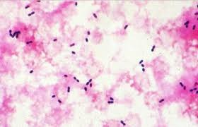
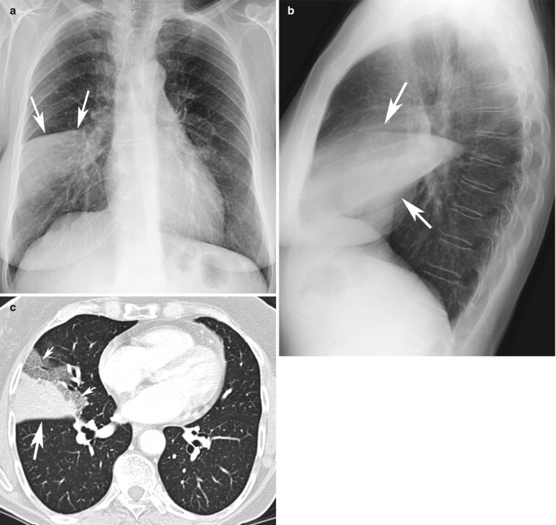
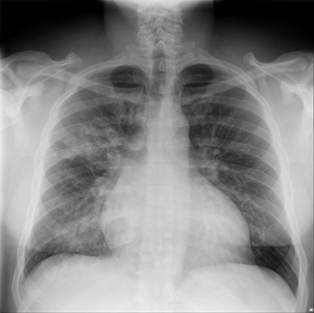
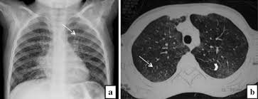
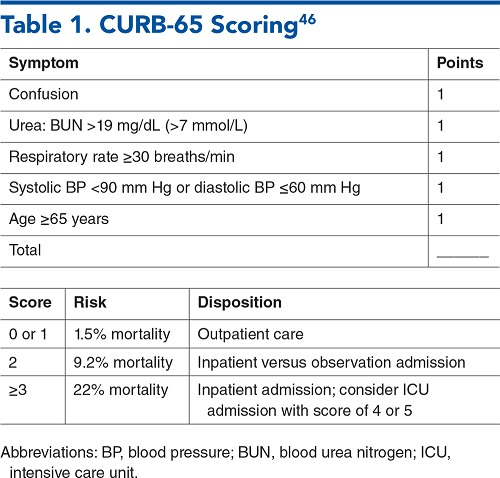

Pneumoniile
Pneumonia pneumococică · Pneumonii atipice · Pneumonii virale · Evaluarea severității · Tratament empiric
Pneumonia comunitară (PAC) este a 6-a cauză de deces la nivel global și prima cauză de deces prin boală infecțioasă. În ciuda antibioterapiei moderne, mortalitatea PAC rămâne 5-15% la pacienții spitalizați și poate depăși 30% la cei cu forme severe internați în ATI. Ca medic de familie, vei fi primul care evaluează un pacient cu tuse, febră și dispnee — decizia ta de a trata ambulator sau de a trimite la spital se bazează pe scoruri validate (CURB-65, PSI) și poate salva vieți. Fiecare oră de întârziere a antibioterapiei empirice crește mortalitatea.
Definiție și clasificare
Pneumonia reprezintă o inflamație acută a parenchimului pulmonar (alveole și/sau interstițiu) de cauză infecțioasă, caracterizată clinic prin febră, tuse, dispnee și infiltrat radiologic. Este una dintre cele mai frecvente cauze de morbiditate și mortalitate la nivel mondial, cu impact semnificativ în practica medicului de familie.
Clasificarea după contextul dobândirii este esențială pentru alegerea antibioterapiei empirice. Pneumonia comunitară (PAC) se definește ca pneumonia dobândită în afara mediului spitalicesc sau apărută în primele 48 de ore de la internare, la un pacient care nu a fost internat în ultimele 90 de zile. Pneumonia nosocomială este cea care apare după 48 de ore de spitalizare și implică frecvent germeni multirezistenți (Pseudomonas, Acinetobacter, MRSA).
Clasificarea clinică: tipică vs. atipică
Distincția clinică între pneumonia tipică și cea atipică rămâne utilă pentru orientarea terapeutică inițială, deși suprapunerea clinică este frecventă. Pneumonia tipică (exemplu: pneumococul) se caracterizează prin debut brusc cu frison solemn, febră înaltă, tuse productivă cu spută purulentă/ruginie, junghi toracic și semne de condensare pulmonară la examenul fizic. Radiologic, se observă opacitate lobară sau segmentară omogenă. Pneumonia atipică (Mycoplasma, Chlamydophila, Legionella, virusuri) are debut insidios, cu tuse uscată persistentă, febră moderată, cefalee, mialgii, și o discrepanță caracteristică între sărăcia semnelor fizice și extinderea infiltratului radiologic (aspect reticulonodular, interstițial, bilateral).
Distincția nu este doar academică — are consecințe terapeutice directe. Pneumonia tipică (pneumococică) răspunde la betalactamine (amoxicilină, ceftriaxonă), dar nu la macrolide ca monoterapie dacă pneumococul e rezistent. Pneumonia atipică (Mycoplasma, Chlamydophila, Legionella) nu răspunde la betalactamine deoarece acești patogeni sunt intracelulari sau lipsiți de perete celular — necesită macrolide, tetracicline sau fluorochinolone. De aceea, ghidurile recomandă ca tratamentul empiric al PAC să acopere AMBELE categorii: betalactamină + macrolid sau fluorochinolonă respiratorie în monoterapie.
Pneumonia pneumococică
Streptococcus pneumoniae rămâne prima cauză de pneumonie comunitară bacteriană la adult (40-50% din cazurile cu etiologie identificată). Este un coc Gram-pozitiv, lanceolat, capsulat, dispus în diplo, cu peste 90 de serotipuri diferite prin polizaharidul capsular. Aproximativ 10 serotipuri sunt responsabile de majoritatea infecțiilor invazive la nivel regional.
Epidemiologie. Colonizarea faringiană asimptomatică este de 5-10% la adulți și 20-40% la copii, crescând în sezonul rece și după infecții virale ale căilor respiratorii superioare. Transmiterea se face pe cale aeriană (picături Flügge) sau contact direct. Factorii de risc majori includ: vârstele extreme (copii <2 ani, adulți >65 ani), asplenia (funcțională sau chirurgicală), imunosupresia (HIV, mielom, LLC), BPOC, tabagismul, etilismul cronic și diabetul zaharat.
Tablou clinic. Incubația este de 2-3 zile. Debutul este clasic brusc, cu frison solemn (un singur episod de frison intens, spre deosebire de frisoanele repetate din bacteriemii cu Gram-negativi), febră înaltă (39-40°C), junghiuri toracice pleuritice unilaterale, tuse inițial uscată apoi productivă cu expectorații ruginie (patognomonice, datorate exsudatului alveolar bogat în hemații). La examenul fizic se constată tahicardie, tahipnee și semne de condensare pulmonară: matitate la percuție, sufluri tubare, raluri crepitante. Herpes labial este frecvent asociat și, deși nespecific, este un indiciu clinic util.

- Ce observi: Cocci Gram-pozitivi (violet intens pe fond roz), de formă lanceolată (ovalară, ușor alungiți), dispuși predominant în diplo (perechi). Dimensiunea este mică (0,5-1,25 μm), cu un halou clar în jurul bacteriilor sugerând prezența capsulei polizaharidice (care nu se colorează prin Gram).
- Ce observi: Cocci Gram-pozitivi (violet intens pe fond roz), de formă lanceolată (ovalară, ușor alungiți), dispuși predominant în diplo (perechi). Dimensiunea este mică (0,5-1,25 μm), cu un halou clar în jurul bacteriilor sugerând prezența capsulei polizaharidice (care nu se colorează prin Gram).
- Ce sugerează: Aspect tipic de Streptococcus pneumoniae în sputa unui pacient cu pneumonie. Prezența formei lanceolate și dispunerea în diplo diferențiază pneumococul de alți streptococi (care formează lanțuri) și de stafilococi (care formează ciorchini).
- Diferențial vizual: Nu confunda cu Staphylococcus aureus (cocci Gram-pozitivi în ciorchini, nu diplo) sau cu Enterococcus (cocci mai rotunzi, în lanțuri scurte sau perechi, dar fără forma lanceolată).
Particularități clinice în funcție de teren
La vârstnici, simptomele sunt frecvent atenuate — pot fi afebrili sau hipotermi (semn de prognostic nefavorabil), cu letargie, confuzie sau dezorientare ca manifestări principale. La copii mici, tabloul este dominat de simptome nespecifice: dureri abdominale, vomă, iritabilitate. La pacienții splenectomizați, evoluția poate fi fulminantă, cu sepsis sever, CID și purpură, necesitând recunoaștere și tratament de urgență.
Complicații
Complicația cea mai frecventă este pleurezie parapneumonică (până la 40% din cazuri, mecanism reactiv-iritativ), care trebuie diferențiată de empiem (2% din cazuri — prezență de puroi în cavitatea pleurală cu pH ≤7,1, necesitând drenaj). Alte complicații: abcedare (rară pentru pneumococ pur), determinări la distanță pe cale hematogenă (meningită pneumococică — prima cauză la adult, endocardită, peritonită).
Persistența febrei și leucocitozei după 4-5 zile de antibioterapie corectă la un pacient cu pneumonie pneumococică trebuie să ridice suspiciunea de empiem. Nu întârzia puncția pleurală diagnostică! Empiemul (pH pleural ≤7,1, glucoză <40 mg/dL, LDH >1000 UI/L, bacterii pe frotiu Gram) necesită drenaj toracic — antibioticele singure nu sunt suficiente.

- Ce observi: (a) Radiografie PA — opacitate omogenă, bine delimitată în lobul mediu drept (săgețile), cu ștergerea siluetei marginii cardiace drepte (silhouette sign), sugerând consolidare lobară. (b) Radiografie profil — confirmă localizarea anterioară a condensării, tipică pentru lobul mediu drept (săgețile indică opacitatea triunghiulară între scizura orizontală și oblică). (c) CT toracic — consolidare parenchimatoasă densă cu bronhogramă aeriană în lobul mediu drept (săgețile), demonstrând alveolele pline de exsudat cu bronhiile permeabile.
- Ce observi: (a) Radiografie PA — opacitate omogenă, bine delimitată în lobul mediu drept (săgețile), cu ștergerea siluetei marginii cardiace drepte (silhouette sign), sugerând consolidare lobară. (b) Radiografie profil — confirmă localizarea anterioară a condensării, tipică pentru lobul mediu drept (săgețile indică opacitatea triunghiulară între scizura orizontală și oblică). (c) CT toracic — consolidare parenchimatoasă densă cu bronhogramă aeriană în lobul mediu drept (săgețile), demonstrând alveolele pline de exsudat cu bronhiile permeabile.
- Ce sugerează: Aspect clasic de pneumonie lobară, cel mai frecvent de etiologie pneumococică. Bronhograma aeriană confirmă consolidarea alveolară (nu atelectazia).
- Diferențial vizual: Opacitatea lobară omogenă se diferențiază de bronhopneumonie (opacități neomogene, multifocale) și de pneumonia interstițială (pattern reticulonodular fără consolidare).
Alte pneumonii bacteriene
Pneumonia cu Haemophilus influenzae
H. influenzae este al doilea agent etiologic ca frecvență în PAC, după pneumococ. Tulpinile netipabile (fără capsulă) sunt cele mai frecvent implicate în pneumonii la adult, în special la pacienții cu BPOC, tabagism cronic și infecție HIV. Tabloul clinic nu diferă semnificativ de alte pneumonii bacteriene, dar debutul este mai insidios, cu accentuarea cantității de spută mucopurulentă. Pleurezie este frecvent asociată.
Pneumonia stafilococică
Staphylococcus aureus determină pneumonii severe, frecvent post-gripale (infecția virală lezează epiteliul respirator, facilitând aderența stafilococului). Două mecanisme de producere: pneumonia prin inhalare/aspirație (post-gripă, la pacienți cu fibroză cistică, HIV) și pneumonia hematogenă (endocardita pe valva tricuspidă la consumatorii de droguri i.v., catetere venoase centrale). Elementele sugestive pentru etiologia stafilococică sunt: prezența factorilor predispozanți, tendința la abcedare, apariția pneumatocelelor (bule cu sau fără nivel lichidian) și empiemului (1/3 din cazuri), lipsa răspunsului la terapia anti-pneumococică. Tratamentul necesită antibiotice anti-stafilococice: oxacilină (MSSA) sau vancomicină/linezolid (MRSA), durata 21-28 zile.
Pneumonia cu Klebsiella pneumoniae
Apare clasic la pacienții cu etilism cronic, malnutriție, diabet zaharat. Debutul este brusc, cu febră înaltă, frisoane, tuse cu expectorații gelatinase, hemoptoice. Radiologic, se constată condensare masivă preferențial în lobul superior, cu tendință la abcedare și necroză („bloc pneumonic"). Mortalitatea este ridicată (până la 50%). Tratamentul se face cu cefalosporine de generația III ± aminoglicozide; pentru tulpinile producătoare de ESBL, carbapeneme.
Pneumonia cu Legionella pneumophila
Boala legionarilor este o pneumonie severă cauzată de Legionella pneumophila, un bacil Gram-negativ care se multiplică intracelular în macrofagele alveolare. Sursa: apa contaminată din sisteme de răcire, dușuri, umidificatoare, nebulizatoare (hoteluri, spitale). NU se transmite interuman.
Tabloul clinic distinctiv include: pneumonie gravă cu afectare multisistemică (respiratorie, hepatică, renală, neurologică), sindrom diareic (40% din cazuri), bradicardie relativă (frecvență cardiacă neadecvat de scăzută pentru gradul febrei, în 2/3 din cazuri), hiponatremie. Mortalitatea fără tratament: 15-20%. Diagnosticul se confirmă prin antigenul solubil urinar (pozitiv doar pentru serogrupul 1, care reprezintă 90% din infecții). Tratamentul: macrolide (azitromicina) sau fluorochinolone (levofloxacin, moxifloxacin) — niciodată betalactamine!
Pneumonia tipică
- Debut: brusc, frison solemn
- Febră: înaltă, 39-40°C
- Tuse: productivă, spută purulentă/ruginie
- Junghi toracic: prezent, pleuritic
- Examen fizic: semne de condensare (matitate, suflu tubar, raluri crepitante)
- Rx toracic: opacitate lobară/segmentară omogenă
- Leucocite: leucocitoză >12.000 cu neutrofilie
- Agent tipic: S. pneumoniae, H. influenzae
- Tratament: betalactamine ± macrolid
Pneumonia atipică
- Debut: insidios, progresiv pe zile
- Febră: moderată, 38-39°C
- Tuse: uscată, persistentă, rebelă
- Junghi toracic: rar sau absent
- Examen fizic: sărăcăcios, discrepanță fizic-radiologic
- Rx toracic: infiltrat interstițial, reticulonodular, bilateral
- Leucocite: normale sau ușor crescute
- Agent tipic: Mycoplasma, Chlamydophila, Legionella, virusuri
- Tratament: macrolide, tetracicline sau fluorochinolone

- Ce observi: Radiografie toracică PA — opacități neomogene, imprecis delimitate, diseminate bilateral, predominant în câmpurile pulmonare inferioare și medii. Spre deosebire de pneumonia lobară, opacitățile nu respectă limitele unui lob — sunt multifocale, peribronșice, cu aspect „pestriț". Sinusurile costodiafragmatice sunt libere.
- Ce observi: Radiografie toracică PA — opacități neomogene, imprecis delimitate, diseminate bilateral, predominant în câmpurile pulmonare inferioare și medii. Spre deosebire de pneumonia lobară, opacitățile nu respectă limitele unui lob — sunt multifocale, peribronșice, cu aspect „pestriț". Sinusurile costodiafragmatice sunt libere.
- Ce sugerează: Aspect tipic de bronhopneumonie — consolidare multifocală peribronhovasculară, frecvent întâlnită în infecții cu S. aureus, H. influenzae, Klebsiella sau în suprainfecții bacteriene post-virale.
- Diferențial vizual: Se diferențiază de pneumonia lobară (opacitate omogenă limitată la un lob) și de pneumonia interstițială (pattern reticulonodular fără consolidări franche).
B) GREȘIT — Legionella determină pneumonie severă cu diaree, bradicardie relativă și hiponatremie, dar expectorațiile gelatinase nu sunt caracteristice.
C) GREȘIT — Mycoplasma determină pneumonie atipică cu debut insidios, tuse uscată, la pacienți tineri. Nu determină condensare lobară masivă.
E) GREȘIT — Pneumococul determină pneumonie lobară clasică, dar expectorațiile sunt ruginie (nu gelatinase), iar tendința la abcedare este rară. Nu este asociat specific cu etilismul cronic.
Pneumoniile atipice
Pneumonia cu Mycoplasma pneumoniae
Mycoplasma pneumoniae este cel mai frecvent agent al pneumoniilor atipice, responsabilă de 10-15% din PAC. Afectează predominant copii și adulți tineri (5-20 ani), cu transmitere aeriană în focare familiale (rata de atac intrafamilial: până la 90%) și colectivități (școli, cămine studențești, unități militare).
Tablou clinic. Incubația este lungă (2-3 săptămâni). Debutul este insidios, cu febră moderată (38-39°C), cefalee, mialgii, stare generală ușor influențată. Tusea este simptomul dominant — inițial uscată, persistentă, rebelă la tratament, ulterior cu expectorație mucoasă redusă. La examenul fizic, pacientul „nu arată bolnav" — faringită eritematoasă, adenopatie cervicală moderată, raluri subcrepitante bazale rare, fără semne de condensare. Discrepanța dintre sărăcia semnelor fizice și extinderea infiltratului radiologic este marca pneumoniei atipice.
Manifestări extrarespiratorii ale infecției cu Mycoplasma
Până la 25% din pacienți dezvoltă manifestări extrarespiratorii, cele mai frecvente fiind dermatologice (25% — erupții variate, până la eritem polimorf major/Stevens-Johnson în 7% din cazuri) și neurologice (10% — encefalită, meningită, sindrom Guillain-Barré — cele mai severe, dar de regulă reversibile). Alte: miocardită, pericardită, artralgii, anemie hemolitică.
Pneumonia cu Chlamydophila pneumoniae
Chlamydophila pneumoniae este un patogen intracelular obligat cu un ciclu de viață bifazic unic: corpul elementar (CE, extracelular, infecțios, 350 nm) → endocitoză → transformare în corpul reticular (CR, intracelular, replicativ, 800-1000 nm) → fisiune binară → reconversie în CE → eliberare prin liză celulară sau exocitoză.
Tabloul clinic este similar cu cel al infecției cu Mycoplasma: debut insidios, model bifazic (faza I: rinofaringită, sinuzită; faza II: pneumonie la 1-4 săptămâni), tuse persistentă, discrepanță fizic-radiologic. Seroprevalența crește cu vârsta (10% la <10 ani, 50% la adolescenți, >75% la vârstnici), sugerând reinfecții repetate. Coinfecția cu S. pneumoniae și M. pneumoniae este frecventă.

- Ce observi: (a) Radiografie PA — infiltrat interstițial difuz, reticulonodular, predominant în câmpul pulmonar inferior drept (săgeata), fără consolidare lobară omogenă. (b) CT toracic — opacități „în geam mat" (ground-glass) diseminate bilateral, cu pattern de afectare peribronhovasculară și aspect de „copac înmugurit" (tree-in-bud, săgeata curbă), indicând inflamație bronhiolară și peribronhiolară.
- Ce observi: (a) Radiografie PA — infiltrat interstițial difuz, reticulonodular, predominant în câmpul pulmonar inferior drept (săgeata), fără consolidare lobară omogenă. (b) CT toracic — opacități „în geam mat" (ground-glass) diseminate bilateral, cu pattern de afectare peribronhovasculară și aspect de „copac înmugurit" (tree-in-bud, săgeata curbă), indicând inflamație bronhiolară și peribronhiolară.
- Ce sugerează: Aspect radiologic tipic de pneumonie interstițială/atipică, cel mai frecvent datorată Mycoplasma pneumoniae — predomină afectarea interstițiului și a bronhiolelor, nu a spațiului alveolar.
- Diferențial vizual: Se diferențiază de pneumonia lobară (consolidare alveolară omogenă) prin absența opacificării alveolare dense și prin distribuția difuză, bilaterală, reticulonodulară.
Când examenul fizic pulmonar este surprinzător de sărac (raluri minime sau absente, fără semne de condensare) dar radiografia toracică arată infiltrat pulmonar extins → gândește pneumonie atipică (Mycoplasma, Chlamydophila, Legionella, virus). Această discrepanță este cel mai important indiciu clinic pentru orientarea către etiologie atipică și modificarea antibioterapiei empirice (adaugă macrolid sau înlocuiește cu fluorochinolonă respiratorie).
C) GREȘIT — Klebsiella este asociată etilismului cronic, expectorații gelatinase și condensare lobară superioară — nu se potrivește profilul demografic.
D) GREȘIT — Pneumococul determină debut brusc, frison solemn, expectorații ruginie, semne de condensare și leucocitoză cu neutrofilie — niciunul nu este prezent aici.
E) GREȘIT — S. aureus determină pneumonie severă, frecvent post-gripală, cu abcedare și empiem — tabloul este mult prea ușor.
Pneumoniile virale
Pneumoniile virale reprezintă 15-29% din PAC la adulții spitalizați. La copii, virusurile sunt cauza predominantă a pneumoniei (>50%), în special la cei sub 5 ani. Etiologia virală este dominată de virusul gripal (influenza A și B), virusul sincițial respirator (VSR), adenovirusuri, virusuri paragripale, rinovirusuri, metapneumovirus uman (hMPV) și coronavirusuri (inclusiv SARS-CoV-2).
Tablou clinic. Debutul este tipic insidios, precedat de o infecție de căi respiratorii superioare (rinită, faringită, laringită). Tusea este uscată sau cu expectorație mucoasă redusă. Dispneea cu tahipnee poate progresa rapid spre insuficiență respiratorie, mai ales la vârstnici și imunodeprimați. Examenul fizic este sărăcăcios — raluri subcrepitante difuze, fără semne de condensare. Radiologic: infiltrat interstițial bilateral, reticulonodular, cu afectare predominant bazală.
Pneumonia gripală
Virusul gripal determină cea mai severă formă de pneumonie virală primară la adult. După un debut gripal tipic (febră, mialgii, cefalee, rinoree), la 24-48 ore apare dispnee progresivă, tahipnee, cianoză, hipoxemie severă refractară la oxigenoterapie. Mortalitatea este semnificativă, mai ales la vârstnici, gravide și pacienți cu boli cronice. Oseltamivir (inhibitor de neuraminidază) trebuie inițiat cât mai precoce (ideal în primele 48 ore), mai ales la pacienții cu risc crescut.
Suprainfecția bacteriană post-virală
Complicația majoră a pneumoniei virale (în special gripale) este suprainfecția bacteriană, care apare la 3-7 zile după debutul viral, când pacientul părea să se amelioreze. Clinic: reapariția febrei, spută purulentă, leucocitoză cu neutrofilie. Germenii cel mai frecvent implicați: S. pneumoniae, S. aureus, H. influenzae.
Virusul gripal distruge epiteliul respirator ciliat prin efect citopatic direct și induce apoptoza celulelor epiteliale → pierderea barierei mecanice + abolirea clearance-ului mucociliar. Simultan, neuraminidaza virală expune receptorii celulari pentru aderența bacteriană (în special ai pneumococului și stafilococului) pe epiteliul lezat. În plus, infecția virală compromite funcția macrofagelor alveolare (scăderea fagocitozei și a producției de citokine pro-inflamatorii). Rezultatul: un epiteliu dezgolit, cu apărare locală compromisă, devine teren fertil pentru S. aureus și S. pneumoniae — de aceea suprainfecția apare tipic la 3-7 zile post-gripă.
Evaluarea severității — CURB-65 și PSI
Evaluarea severității PAC este pasul critic care determină decizia de tratament ambulator vs. spitalizare vs. ATI. Două scoruri validate sunt utilizate curent: CURB-65 (simplu, 5 variabile) și PSI/PORT (complex, 20 variabile, 5 clase de risc).
CURB-65
Scorul CURB-65 evaluează 5 parametri, fiecare cu câte 1 punct: - C — Confusion: confuzie de novo (scor AMT ≤8 sau dezorientare) - U — Urea: BUN >19 mg/dL (>7 mmol/L) - R — Respiratory rate: frecvență respiratorie ≥30/min - B — Blood pressure: TAs <90 mmHg sau TAd ≤60 mmHg - 65 — vârsta ≥65 ani
Interpretare: Scor 0-1 = risc scăzut (mortalitate ~1,5%) → tratament ambulator. Scor 2 = risc intermediar (mortalitate ~9,2%) → internare scurtă sau observație. Scor ≥3 = risc înalt (mortalitate ~22%) → spitalizare, consideră ATI la scor 4-5.

Tabelul sintetizează cele 5 criterii CURB-65 cu punctajele aferente și stratificarea riscului: scor 0-1 (mortalitate 1,5% → tratament ambulator), scor 2 (mortalitate 9,2% → consider internare), scor ≥3 (mortalitate 22% → internare, cu ATI pentru scor 4-5). Avantajul CURB-65 față de PSI/PORT este simplitatea — doar 5 parametri ușor de evaluat la pat, fără calcule complexe. Dezavantajul: poate subestima severitatea la pacienții tineri fără comorbidități dar cu pneumonie severă." data-sursa="https://www.ebmedicine.net/topics/infectious-disease/pneumonia/calculators">Tabelul sintetizează cele 5 criterii CURB-65 cu punctajele aferente și stratificarea riscului: scor 0-1 (mortalitate 1,5% → tratament ambulator), scor 2 (mortalitate 9,2% → consider internare), scor ≥3 (mortalitate 22% → internare, cu ATI pentru scor 4-5)....
Tabelul sintetizează cele 5 criterii CURB-65 cu punctajele aferente și stratificarea riscului: scor 0-1 (mortalitate 1,5% → tratament ambulator), scor 2 (mortalitate 9,2% → consider internare), scor ≥3 (mortalitate 22% → internare, cu ATI pentru scor 4-5). Avantajul CURB-65 față de PSI/PORT este simplitatea — doar 5 parametri ușor de evaluat la pat, fără calcule complexe. Dezavantajul: poate subestima severitatea la pacienții tineri fără comorbidități dar cu pneumonie severă.
Calculator CURB-65
Severitate pneumonie comunitară — decizie internare
CRB-65 — varianta pentru cabinet
CRB-65 este versiunea simplificată, fără ureea (nu necesită analize de laborator), ideală pentru medicul de familie în cabinet. Aceleași criterii minus U: Confuzie, Respirație ≥30/min, Blood pressure scăzut, ≥65 ani. Scor 0 = risc foarte scăzut → tratament la domiciliu. Scor ≥1 = trimite la urgență pentru evaluare.
Calculator CRB-65 (fără laborator)
Versiune simplificată CURB-65 (fără laborator) — pentru medicul de familie
PSI/PORT
Scorul PSI (Pneumonia Severity Index) utilizează un algoritm în 2 pași cu 20 de variabile (vârstă, sex, comorbidități, parametri fizici și de laborator) pentru a clasifica pacienții în 5 clase de risc. Clasele I-III = risc scăzut (mortalitate <1-2,8%) → tratament ambulator sau internare scurtă. Clasa IV = risc moderat (mortalitate ~9,3%) → internare. Clasa V = risc înalt (mortalitate ~27%) → ATI. Avantajul PSI: validare extensivă, predicție excelentă a mortalității. Dezavantajul: complexitate, necesită analize, poate subestima severitatea la tineri (punctajul este puternic influențat de vârstă și comorbidități).
B) GREȘIT — Un scor de 2 ar indica observație, dar pacientul are scor 5 — toate cele 5 criterii sunt pozitive.
C) GREȘIT — Scorul calculat este 5, nu 3. Cu scor 5, internarea în secția generală nu este suficientă.
E) GREȘIT — Scorul este 5, nu 4. Deși un scor de 4 indică deja necesitatea ATI, calculul corect arată 5 puncte.
Diagnosticul PAC
Diagnosticul pozitiv
Diagnosticul PAC se bazează pe criterii clinice (febră, tuse, dispnee, raluri) confirmate prin infiltrat pulmonar pe radiografia toracică. Radiografia rămâne investigația de bază — sensibilitate 75-85% pentru pneumonie.
Investigații de laborator
Hemoleucograma: leucocitoză >12.000/mm³ cu neutrofilie sugerează etiologie bacteriană; leucocite normale sau leucopenie sugerează etiologie virală sau atipică. Leucopenia (<4.000/mm³) este factor de prognostic nefavorabil. CRP și procalcitonina: CRP >100 mg/L sugerează puternic etiologia bacteriană. PCT >0,5 ng/mL indică etiologie bacteriană cu sensibilitate și specificitate ridicate.
Investigații microbiologice
Hemocultură — obligatorie la PAC severă, ÎNAINTE de inițierea antibioterapiei (pozitivă în 5-15% din pneumoniile pneumococice). Examenul sputei — frotiu Gram + cultură (>60% din pacienți nu expectorizează — se poate provoca sputa prin nebulizare cu soluție salină hipertonă). Antigenul urinar — pentru S. pneumoniae (pozitiv în ~70% din cazuri, sensibilitate >80%) și Legionella serogrup 1 (sensibilitate ~75%, specificitate >99%). PCR multiplex — pentru virusuri respiratorii și patogeni atipici, util mai ales în sezonul gripal.
C) GREȘIT — Pacientul nu răspunde de 5 zile la tratament. A aștepta încă 48 ore fără investigație suplimentară poate fi periculos.
D) GREȘIT — Bronhoscopia este o investigație de rezervă, nu de primă intenție în acest context.
E) GREȘIT — Schimbarea antibioticului fără diagnostic al complicației nu rezolvă problema — dacă este empiem, necesită drenaj chirurgical, nu doar antibiotice mai potente.
Tratamentul empiric al PAC
Tratamentul empiric al PAC se bazează pe locul de îngrijire (ambulator vs. spital vs. ATI), prezența comorbidităților și factorii de risc pentru germeni rezistenți.
PAC ușoară — tratament ambulator
Pacient fără comorbidități: Amoxicilină 1g × 3/zi p.o. (acoperă pneumococul, inclusiv tulpini cu sensibilitate intermediară la penicilină) SAU Macrolid (azitromicină 500 mg/zi × 3 zile sau claritromicină 500 mg × 2/zi) dacă suspiciune de atipic. Pacient cu comorbidități (BPOC, DZ, insuficiență cardiacă, hepatică, renală, etilism): Amoxicilină-clavulanat 1g/125mg × 3/zi + macrolid SAU Fluorochinolonă respiratorie în monoterapie (levofloxacin 500 mg/zi sau moxifloxacin 400 mg/zi).
PAC moderată — spitalizare
Cefalosporină de generația III (ceftriaxonă 2g i.v./zi sau cefotaxim 1-2g i.v. × 3/zi) + Macrolid (azitromicină 500 mg i.v./zi) SAU Fluorochinolonă respiratorie i.v. (levofloxacin 500 mg/zi).
PAC severă — ATI
Cefalosporină de generația III i.v. + Macrolid i.v. (sau fluorochinolonă respiratorie i.v.). Dacă factori de risc pentru Pseudomonas (bronșiectazii, fibroză cistică, corticoterapie cronică, spitalizare recentă): piperacilină-tazobactam sau cefepim sau carbapenem + fluorochinolonă anti-Pseudomonas. Dacă risc MRSA: adaugă vancomicină sau linezolid.
Tratamentul empiric al PAC — în funcție de severitate
| Severitate | Prima linie | Alternativa | Durata |
|---|---|---|---|
| Ambulator, fără comorbidități | Amoxicilină 1g × 3/zi p.o. | Azitromicină 500mg/zi × 3 zile SAU Doxiciclină 100mg × 2/zi | 5-7 zile |
| Ambulator, cu comorbidități | Amoxicilină-clavulanat + Macrolid | Levofloxacin 500mg/zi SAU Moxifloxacin 400mg/zi | 5-7 zile |
| Spitalizat (secție) | Ceftriaxonă 2g i.v./zi + Azitromicină 500mg i.v. | Levofloxacin 500mg i.v./zi | 5-7 zile |
| ATI | Ceftriaxonă 2g i.v./zi + Azitromicină 500mg i.v. | β-lactamină anti-Pseudomonas + Fluorochinolonă i.v. | 7-14 zile |
Durata tratamentului
Durata minimă recomandată este de 5 zile. Criteriile de oprire: afebril ≥48 ore, stabilizare hemodinamică, toleranță per os, ameliorare clinică. Durata poate fi prelungită la 7-14 zile în forme severe, empiem, abcedare sau etiologie cu Legionella/S. aureus/Gram-negativi.
Studii randomizate au demonstrat că trecerea de la antibioterapia i.v. la cea orală (switch oral) este sigură dacă pacientul îndeplinește criteriile de stabilizare: afebril ≥24-48h, FC <100/min, FR <24/min, TAs ≥90 mmHg, SaO₂ >90%, toleranță orală, status mental normal. Switch-ul oral precoce (la 48-72h) reduce durata spitalizării cu 1-3 zile fără creșterea mortalității sau a ratei de readmisie. Antibioticul oral ales trebuie să aibă spectru similar cu cel parenteral: ceftriaxonă i.v. → amoxicilină-clavulanat p.o.; levofloxacin i.v. → levofloxacin p.o.
Profilaxie
Vaccinul antipneumococic (PCV13/PCV20 conjugat și PPSV23 polizaharidic) este recomandat tuturor persoanelor >65 ani și celor cu factori de risc (asplenie, imunosupresie, boli cronice). Eficacitate >60% în prevenirea pneumoniilor invazive. Vaccinul antigripal anual reduce incidența pneumoniei post-gripale. Asocierea celor două vaccinuri la vârstnici are efect sinergic demonstrat.
Algoritm de evaluare a PAC
Algoritm de evaluare și management al PAC
Bazat pe ghidurile BTS/NICE și ATS/IDSA
Diagnostic diferențial și recapitulare
Diagnosticul diferențial al PAC
Pneumonia trebuie diferențiată de: embolism pulmonar (factori de risc trombotic, D-dimeri crescuți, angio-CT pozitiv), tuberculoza pulmonară (evoluție subacută >3 săptămâni, transpirații nocturne, scădere ponderală, contact epidemiologic, frotiu BK), neoplasm pulmonar (fumător, hemoptizii, scădere ponderală, infiltrat persistent post-tratament), edem pulmonar (dispnee paroxistică nocturnă, cardiomegalie, BNP crescut), vasculite pulmonare (hemoptizii, afectare renală asociată).
2. Klebsiella pneumoniae determină clasic pneumonie cu expectorații ruginie
3. Legionella pneumophila se transmite interuman prin picături Flügge
4. Mycoplasma pneumoniae este rezistentă la betalactamine deoarece nu posedă perete celular
5 criterii pentru stratificarea riscului în PAC: Confuzie, Uree >19 mg/dL, Rate respiratorie ≥30/min, Blood pressure (TAs <90 sau TAd ≤60), vârstă ≥65 ani. Scor 0-1 = ambulator, 2 = consider internare, ≥3 = spitalizare, 4-5 = ATI.
Tipică: debut brusc, frison solemn, spută purulentă/ruginie, semne de condensare, leucocitoză. Atipică: debut insidios, tuse uscată, examen fizic sărăcăcios vs. infiltrat radiologic extins (discrepanță fizic-radiologic), leucocite normale.
Pneumonie + diaree + bradicardie relativă ± hiponatremie. Diagnostic: antigen urinar Legionella serogrup 1. Tratament: macrolide sau fluorochinolone — NICIODATĂ betalactamine (patogen intracelular).
Când pacientul îndeplinește TOATE: afebril ≥48h, FC <100, FR <24, TAs ≥90, SaO₂ >90%, toleranță per os, status mental normal. Switch-ul precoce (48-72h) reduce spitalizarea cu 1-3 zile fără creștere a mortalității.
Cocci Gram-pozitivi, de formă lanceolată (ovalară), dispuși în diplo (perechi). Capsula polizaharidică apare ca un halou clar în jurul bacteriilor. Se diferențiază de stafilococi (ciorchini) și enterococi (lanțuri).
Pacient cu gripă care se ameliorează, apoi la 3-7 zile se agravează brusc: reapariția febrei, spută purulentă, leucocitoză cu neutrofilie. Germeni frecvenți: S. aureus, S. pneumoniae. Mecanism: distrugerea epiteliului ciliat + expunerea receptorilor de aderență bacteriană + compromiterea macrofagelor alveolare.
Pneumonie la medicul de familie — triaj și management
Sunteți medic de familie. Doamna Maria, 67 ani, se prezintă la cabinet acuzând tuse productivă cu spută galben-verzuie de 3 zile, febră 38,7°C, frisoane moderate și o ușoară dificultate în respirație la efort. Antecedente: diabet zaharat tip 2 tratat cu metformin, BPOC stadiu GOLD II (fumătoare 30 pachete-an, oprită acum 5 ani).
Examenul fizic relevă: pacientă conștientă, orientată, tahipneică (FR 24/min), TA 135/85 mmHg, FC 98/min, T 38,7°C, SpO₂ 93% în aer ambiental. Auscultație pulmonară: raluri crepitante în baza dreaptă, fără sufluri tubare. Restul examenului fizic fără particularități.
B) GREȘIT — Analizele sunt utile dar nu sunt prioritare. CRB-65 nu necesită analize și poate fi calculat imediat.
C) GREȘIT — Fluorochinolona este o opțiune terapeutică, dar decizia de tratament vine DUPĂ evaluarea severității.
D) GREȘIT — Trimiterea directă la urgență fără evaluare inițială nu este eficientă. CRB-65 te ajută să triezi corect.
Calculezi CRB-65: Confuzie = NU (0), FR 24/min <30 (0), TA 135/85 normală (0), Vârstă 67 ≥65 (+1). CRB-65 = 1.
C) GREȘIT — CRB-65 ≥1 NU înseamnă risc scăzut. Doar CRB-65 = 0 permite tratamentul ambulator cu încredere.
D) GREȘIT — CT-ul toracic nu este investigație de primă linie în PAC. Radiografia toracică este suficientă.
E) GREȘIT — Pacienta ARE comorbidități semnificative (DZ, BPOC) care cresc riscul. CRB-65 = 1 cu comorbidități = trimite la spital.
La urgență, analizele arată: leucocite 14.200/mm³ (neutrofile 82%), CRP 187 mg/L, uree 42 mg/dL (BUN 19,6 mg/dL), creatinină 1,1 mg/dL, glicemie 210 mg/dL. Radiografia toracică: opacitate omogenă în lobul inferior drept cu bronhogramă aeriană, fără revărsat pleural. Hemoculturi recoltate.
C) GREȘIT — Vârsta ≥65 ani și BUN >19 mg/dL sunt ambele pozitive.
D) GREȘIT — FR 24/min este sub pragul de 30/min, deci nu primește punct.
E) GREȘIT — Pe lângă vârstă, BUN-ul de 19,6 mg/dL este la limită (prag: >19 mg/dL). Evaluarea corectă include ambele criterii.
B) GREȘIT — Vancomicina acoperă MRSA dar nu acoperă germenii Gram-negativi sau atipicii. Nu este terapie empirică de primă linie în PAC.
C) GREȘIT — Meropenemul este rezervat infecțiilor cu germeni ESBL-producători sau Pseudomonas. Nu este indicat ca primă linie empirică în PAC fără factori de risc pentru germeni multirezistenți.
D) GREȘIT — Ciprofloxacinul NU are activitate antipneumococică suficientă! Nu este o fluorochinolonă respiratorie. Opțiunile corecte sunt levofloxacin sau moxifloxacin.
C) GREȘIT — Durata minimă a antibioterapiei este de 5 zile. La 48h, tratamentul trebuie continuat per os, nu întrerupt.
D) GREȘIT — Prelungirea antibioterapiei i.v. peste 48-72h când pacientul îndeplinește criteriile de switch oral crește costurile și riscurile (infecții de cateter, Clostridioides difficile) fără beneficiu terapeutic.
E) GREȘIT — Pacienta răspunde favorabil la terapia curentă. Nu este necesar un antibiotic suplimentar.
- Diagnostic: Pneumonie comunitară lobară (lob inferior drept), cel mai probabil pneumococică.
- Lecții cheie: CRB-65 la cabinet → CURB-65 la urgență → decizie bazată pe scor + comorbidități. Amoxicilina orală la ambulator, ceftriaxonă + macrolid la spitalizat. Switch oral precoce la 48-72h dacă criterii îndeplinite. Durata minimă 5 zile.